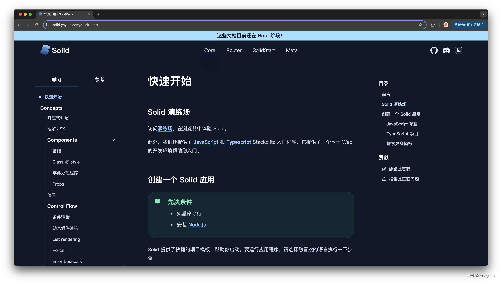
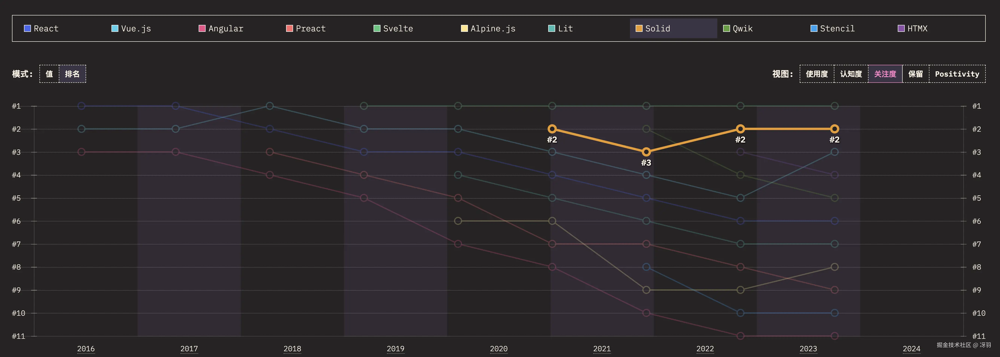
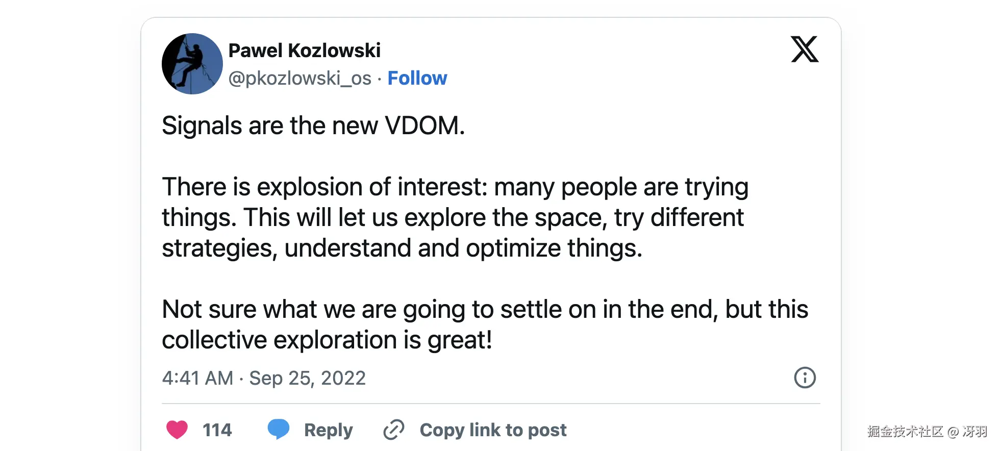
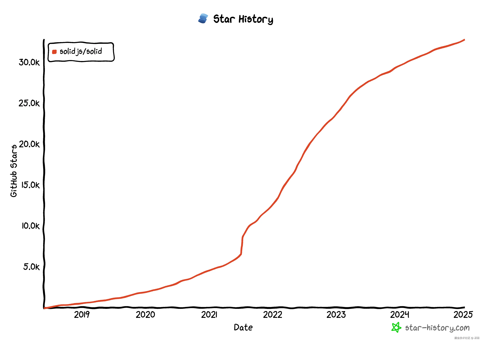

Solid.js，一个比 React 更 react 的框架。每一个使用 React 的同学，你可以不使用，但不应该不了解。
目前 Solid.js 发布了最新的官方文档，但却缺少对应的中文文档。
为了帮助大家学习了解 Solid.js，为爱发电翻译了官方文档里的“学习”部分（你可以理解为教程），并搭建了 Solid.js 最新的中文文档站点：solid.yayujs.com：
虽说是翻译，但个人并不喜欢严格遵守原文，为了保证中文阅读流畅，会删减部分语句，对难懂的部分也会另做补充解释，希望能给大家带来一个好的中文学习体验。
Solid.js 是一个现代 JavaScript 框架，旨在构建响应式和高性能的用户界面 (UI)。它优先考虑简单且可预测的开发体验，使其成为开发人员的绝佳选择。
这是出自官方文档的介绍，但这样说还有点懵是不是？
Solid.js 到底有哪些特性让它如此受关注呢？我们接着往下看。
作为一个 JavaScript 框架，Solid 拥有响应式和细粒度更新。
响应式是指应用程序响应数据或用户交互变化的能力。
细粒度更新是指仅当应用程序依赖的数据发生变化时才更新。这减少了工作量，并可以带来更快的加载时间和更流畅的用户体验。
这里就要批评下 React 了，在 React 中，每次更新都会导致整个组件重新计算，但在 Solid.js 中，只会更新页面中需要更新的部分。
而 Solid.js 实现的基础就是 Signals（信号）。实际上，Solid.js 正是因为以发扬了 Signals 概念而闻名。
以至于最近大家提起 Signals，都在说：“Signals 是前端框架的未来”。从使用情况来说，还真是这样。Angular、Ember、Preact、Qwik、Solid、Svelte、Vue，甚至 Mobx、Tailwind 都已使用 Signals，甚至已经有了关于 Signals 的 TC39 提案，未来可能直接在 JavaScript 中使用 Signals。
Solid 的目标是在速度、效率、功能和灵活性之间取得平衡，同时提供一个对开发人员友好的环境。这种功能组合使其成为构建响应式和高性能 UI 的绝佳选择。
我知道有些同学看到这种“新框架”，又要感叹：“学不动了，不要学了”，首先，我要纠正一下， Solid.js 并不是一个新框架，根据上面的 Stars 增长图，其实 2018 年就已经出来了，前几年还是很火的，也正是如此，我对 Solid.js 一直都有关注和了解。
其次，其实我也没有真正在公司项目里用过 Solid.js，毕竟实际的技术选型要考虑很多东西，尤其是需要长期维护的项目，就比如框架生态、周边解决方案、更新频率与稳定性等。但我一直觉得 Solid.js 是个非常不错的框架，所以才为爱发电翻译了官方文档。学习和了解它并不会花费你多少时间，但它会给你一个新的视角看待我们正在使用的 React。